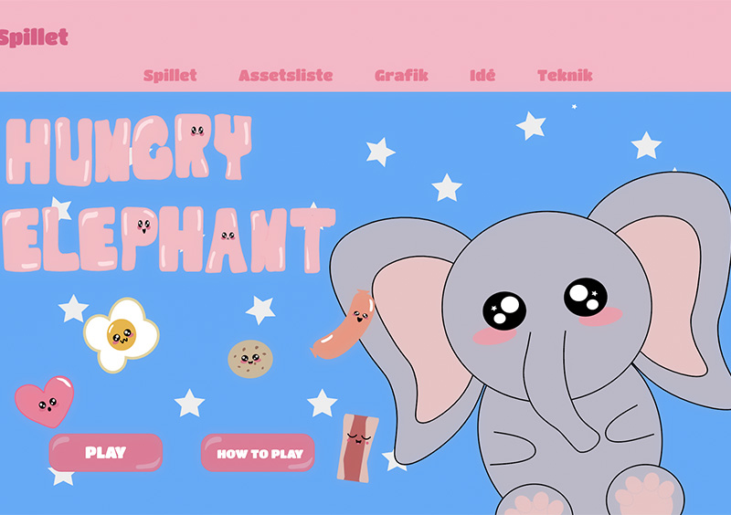

Portfolio
Tema 2 - Grundlæggende web
I temaet grundlæggende webdesign har lært at kode hjemmesider i HMTL
og CSS via Visual Studio Code. I forbindelse med vores
studiestartprøve, har vi lært at beherske layout ved at anvende grid
og flexbox i CSS.
På billedet til højre kan i se min studiestartprøve, hvor jeg har
benyttede mig af layoutprincipperne ved at anvende grids og flexbox
til at løse opgaven. For at se min studiestartsprøve,
Klik her
I forbindelse med tema 1, har vi også gjort os bekendtskab med forskellige stilarter inden for webdesign. Vi beskæftiget os med at lave moodboard og styletile i Adobe XD, samt billede behandling i photoshop.
I emnesite projektet har jeg valgt at tage udgangspunkt i Brutalisme som stilart. Jeg har benyttet mig af Brutalismens designprincipper ved at baggrundsbilledet som en collage, for at opnå et ”tilfældigt look”. Jeg har valgt at bruge forskellige typografier, for at give sitet et personligt udtryk. For at se mit emnesite, Klik her
Tema 3 - Grundlæggende UX
I temaet grundlæggende UX er vi blevet præsenteret for en række researchmetoder: desktopresearch, survey, interview og observationsundersøgelse. Vi er blevet præsenteret for forskellige metoder til at idégenerere, samt lave prototyper: crazy 8’s, SPRINT, solution sketch, paper prototyping og prototype i Adobe XD.
I forbindelse med min Grundlæggende UX-projekt, valgte jeg, blandt andet, researchmetoden survey, for at undersøge forbrugernes shopping adfærd, når de køber t-shirts. På billedet kan i screenshots af nogle af de svar, som jeg har fået. Resultaterne fra undersøgelsen har givet mig et indblik i hvordan forbrugerne shopper, hvor de shopper og hvilke t-shirts de shopper, samtidig fik jeg inspiration til konceptudvikling.
På billedet ses en wireframe som jeg har tegnet i hånden. Jeg fik Idé til denne wireframe efter vi lavede en øvelse med Crazy 8 i klassen. Jeg udvalgte de tegninger som havde fået flest stemmer og lavede nogle småændringer.
På dette billede kan i se hvordan jeg har benyttet mig af overstående wireframe, til at lave kreerer min digitale prototype i Adobe XD. Jeg anvendt den viden, jeg har fået fra undervisningen, om UI-konventioner, samt stilart i forbindelse med designprocessen af prototypen. For at se min prototype Klik her


Tema 4 - Grundlæggende animation
I Grundlæggende animation fik vi til opgave at skulle lave vores eget spil. Temaopgaven skulle løses ved brug af CSS-animation og JavaScript, som vi er blevet introduceret for under temaet. I starten af temaet fik vi gjort os bekendtskab med forskellige karakterdesign og stile.
I denne opgave har vi lært at bruge funktioner i JavaScript, ved at vælge elementer fra HTML med addClass/removeClass


På billedet ved siden af, kan i se min hvordan jeg har benyttet mig af CSS-animation til mit spil. Animationen bliver sat i gang, ved at funktion bliver kaldt på. Funktionen befinder sig i JavaScript.
I forbindelse med designet, har jeg valgt at tage udgangspunkt i Kawaii stilen. For at se mit spil Klik her
Tema 5 - Grundlæggende indhold
I tema 5 Grundlæggende indhold, skulle vi give os i kast med at lære, at filme en pilotvideo til et pilotwebsite, vi blev præsenteret for hvordan man redigerer video i Adobe Premiere Pro, samt fik vi til opgave at skulle lave et redesign af en virksomheds hjemmeside, som også skulle indeholde en video.
I forbindelse med undervisning, lærte vi forskellige teknikker til
hvordan man filmer en god pilotvideo, bland andet, ved at benytte
sig af: bi-roles, close up af hænder og øjne, samt the rule of
thirds. I løbet af temaet blev vi også præsenteret for, hvordan man
embedder en video i HTML-fil med elementet
< video >. Jeg har brugt det overstående til at løse min pilotsite
opgave. For at se min pilotsite
Klik her
I vores redesign projekt valgte vi at lave et redesign af en
IT-konsulents hjemmeside. Som en del af forarbejdet valgte vi at
udføre en tænke-højt-test, samt en BERT-test (Bipolær Emotionel
Respons Rest) på kunden. På baggrund af testresultaterne kom vi frem
til at kunden ønskede et funktionelt site, som havde et afslappet
udtryk, og som følge af det kom vi frem til det design som i kan se
på billedet. For at se vores redesignprojekt
Klik her
OBS Brugernavn og Kode er: KEA
Formålet var at opfylde kundes ønsker, derfor har vi valgt at
designe et modernistisk website, som er bygget op af grids. For at
skabe lidt kontrast på hjemmesiden, har vi valgt at sætte to
komplementærfarver sammen (blå og orange). Det var vi f.eks. anvendt
i logoet, så det fremstår mere iøjnefaldende.
Efter vi har lavet vores redesign, valgte vi at lave en BERT-test på
brugere. Formålet var at sammenligne kundens resultat med brugernes
resultat, og for se om kom i mål med ønskede resultat. Resultatet
viser at vi er kommet nogenlunde i mål med det ønskede resultat, det
eneste som stikker lidt ud er, formelt og afslappet.
For at læse vores procesdokumentation
Klik her

Tema 6 - Portfolioeksamen
Jeg har valgt stilarten minimalisme som udgangspunkt for min
udvikling af portfolio-sitet. Vi blev kort præsenteret for denne
stilart i tema 1 Grundlæggende webdesign. Som følge af stilarten har
jeg valgt at tage udgangspunkt i ”Less Is More” begrebet, og har
valgt at reducere designet til de mest essentielle elementer, for at
sikre funktionalitet. Det har jeg f.eks. gjort ved at: forenkle
brugergrænsefladen og UI-designet, ikke brugt mere end 3 farver på
sitet, reduceret antallet af knapper.
Jeg har valgt at tage udgangspunkt i minimalisme, fordi det er den
stilart jeg bedst kan lide inden for webdesign. Det er en stilart
jeg højtansynligvis vil anvende, hvis jeg i fremtiden skulle lave et
professionelt portfolio-site.

Da jeg udarbejdede mit site, har jeg anvendt min viden om gestaltloven fra undervisningen. Loven om lukkethed: de lyserøde kasser som indrammer tema-indholdet (Portfolio side) loven om lighed: de lyserøde kasser (Om mig siden)
I forbindelse med processen for at udvikle mit portfolio-site, har jeg valgt at benytte mig af Trello-board for at skabe overblik over mine arbejdsopgaver og gøremål. Vi blev introduceret til Trello som et af projektstyringsværktøjerne (scrum), i tema 5 Grundlæggende indhold, hvor vi har brugt værktøjet i vores gruppearbejde.